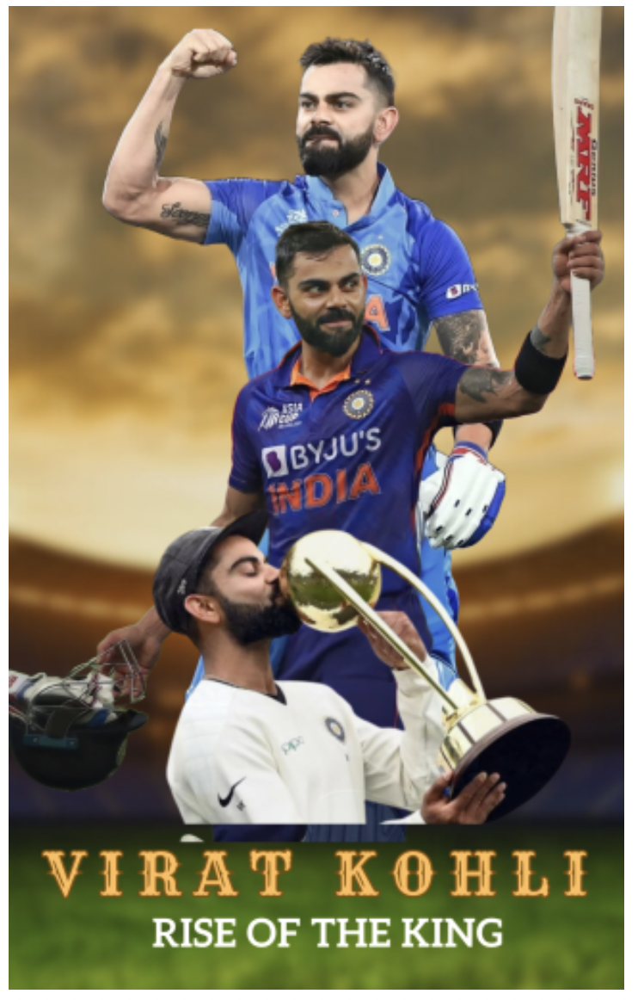

I developed my book cover about Virat Kohli (Indian Cricketer). I used Canva tool to develop this book cover. The blurred cricket stadium sets the context of the book – cricket. By blurring it, the background doesn't overpower the main images, ensuring that Virat remains the central focus. I have collected 3 pictures of Virat Kohli which conveys different stages of his career. Each image depicts a unique phase of his journey in Cricket. I used Adobe Photoshop to extract the object(Virat Kohli) by removing the background for these images. Then I have added these images to Canva on top of the blurred cricket Stadium. The name "Virat Kohli" is written in big letters and below his name, "Rise of the King" tells what the book is about.
This logo is for a project I wanted to work on called "Jobgram". It is a social media platform for Employees and Recruiters. Jobgram is different from Traditional job search platforms, in this platform instead of employees looking for jobs, the jobs look for them. So, employees just make a profile with their work details, and companies will reach out to them if they're interested. I wanted to convey this idea in the logo, in the logo I have added a person figure(employee) under a magnifying glass. It depicts that the companies are searching for employes. The words "Let jobs find you" tell everyone what Jobgram is all about. You just set up your profile, and then wait for a job to find you. I used black and white colors to keep it simple and used a Canva tool to make the logo.